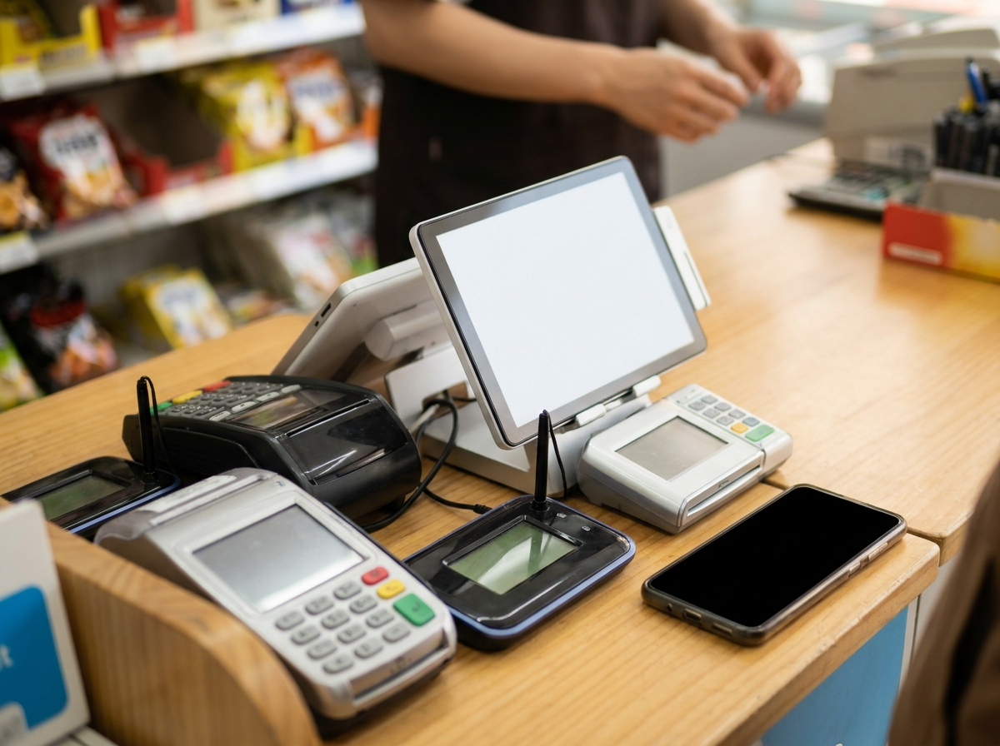
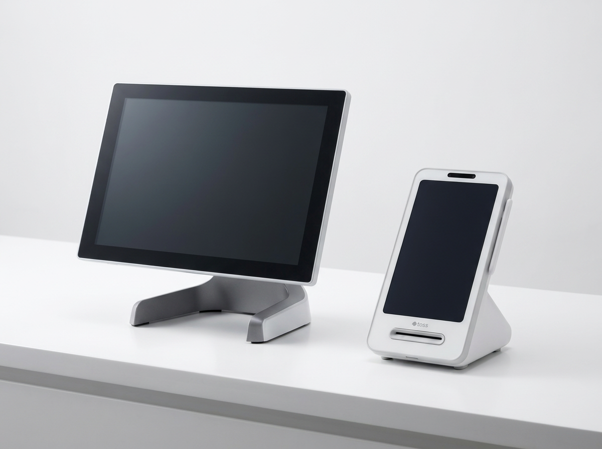
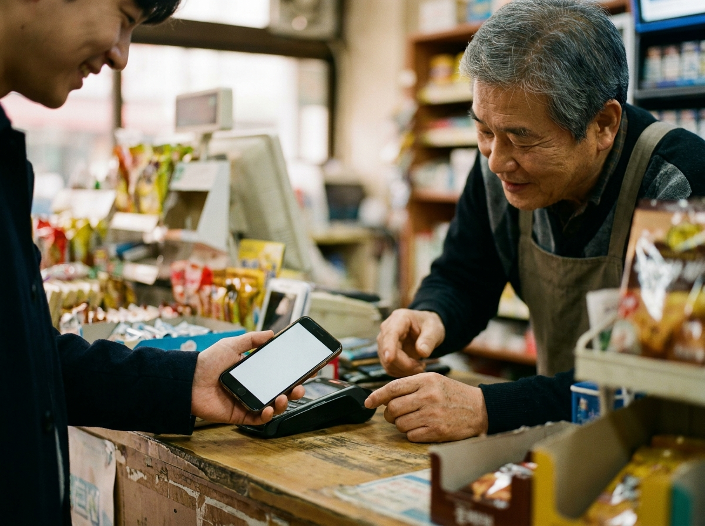

애플페이·삼성페이·제로페이, 우리 매장은 어디까지 받아야 할까
결론부터 말씀드리면, 요즘 손님이 자주 쓰는 간편결제는 대부분 매장 단말기 구성만 제대로 갖추면 받을 수 있습니다. 애플페이·삼성페이·네이버페이·카카오페이·제로페이·QR결제까지, 지금 우리 매장 손님층에 맞춰 "어디까지 받을지"만 정하면 됩니다. 무조건 전부 다 열어둘 필요는 없지만, 손님이 내밀었을 때 "저희는 그거 안 돼요"라는 말이 나오지 않게 준비해 두는 것이 매출 방어의 기본입니다. 아래에서 종류별로 무엇이 필요한지, 매장 유형별로 어디까지 받으면 좋은지 정리해 드립니다.

간편결제, 크게 세 갈래로 이해하면 쉽습니다
복잡해 보이지만 실제로는 세 가지 방식으로 나뉩니다. 첫째, 스마트폰을 단말기에 갖다 대는 비접촉(NFC) 방식입니다. 애플페이가 대표적으로, 아이폰을 단말기에 터치해 결제합니다. 삼성페이도 스마트폰을 대는 방식으로 널리 쓰입니다. 둘째, 화면의 QR코드나 바코드를 찍는 방식입니다. 네이버페이·카카오페이·제로페이가 여기에 해당하며, 손님 휴대폰의 결제 바코드를 매장에서 스캔하거나 매장 QR을 손님이 찍는 형태입니다. 셋째, 여전히 가장 많이 쓰이는 실물 카드(IC칩 삽입·터치) 방식입니다. 결국 어떤 손님이 오든 받을 수 있으려면, 이 세 방식을 아우르는 단말기 구성이 핵심입니다.
간편결제 종류별 특징·필요 단말 정리표
| 결제수단 | 방식 | 매장에 필요한 것(개념) | 참고 |
|---|---|---|---|
| 애플페이 | 비접촉(NFC) 터치 | NFC 지원 카드단말기 | 아이폰 사용 손님층 있으면 유용 |
| 삼성페이 | 스마트폰 터치 | 지원 카드단말기 | 안드로이드 손님층에 익숙 |
| 네이버페이 | QR·바코드 | QR/바코드 스캔 가능한 구성 | 온라인 익숙한 손님 선호 |
| 카카오페이 | QR·바코드 | QR/바코드 스캔 가능한 구성 | 일상 결제로 사용층 넓음 |
| 제로페이 | QR 간편결제 | 제로페이 가맹·QR | 정부·지자체 주관 개념 |
| 알리·위챗페이 | QR | QR 스캔 구성 | 외국인 손님 많은 상권 |
위 표는 이해를 돕기 위한 개념 정리입니다. 각 결제수단의 지원 카드사·단말 조건·수수료는 카드사와 해당 결제사(PG 포함) 공식 안내를 반드시 확인하시기 바랍니다. 정책은 수시로 바뀌므로 단정적으로 안내하기보다, 도입 시점에 우리 매장 상황에 맞게 확인하는 것이 안전합니다.

매장 유형별, 어디까지 받으면 좋을까
카페·음식점 등 일반 대면 매장이라면 실물 카드 결제를 기본으로, 삼성페이·애플페이 같은 스마트폰 결제와 네이버·카카오페이 QR을 함께 받는 구성이 무난합니다. 젊은 손님이 많을수록 애플페이 대응이 체감 효과가 큽니다.
관광지·번화가처럼 외국인 손님이 많은 상권이라면 알리페이·위챗페이 같은 해외 QR결제까지 열어두는 편이 매출에 도움이 됩니다.
무인·셀프 매장이나 키오스크 운영 매장이라면 손님이 직접 결제하는 만큼, 카드와 간편결제를 넓게 지원하는 단말·키오스크 구성이 중요합니다. 제로페이는 정부·지자체가 주관하는 QR 간편결제 개념으로, 세부 혜택과 가맹 조건은 제로페이·지자체 안내를 확인하신 뒤 필요에 따라 추가하시면 됩니다.
결국 중요한 건 "우리 매장에 맞는 단말기 구성"
간편결제 하나하나를 따로 신청하고 세팅하려면 복잡하지만, 실제로는 매장에 맞는 단말기를 제대로 갖추면 대부분 한 번에 해결됩니다. 누리네트웍스는 포스, 토스단말기, 네이버단말기 등 매장 상황에 맞는 결제 구성으로 여러 간편결제를 폭넓게 받을 수 있게 도와드리는 결제·포스 전문 기업입니다. 특히 토스단말기·네이버단말기는 월 0원·약정 없음으로 시작할 수 있어 부담이 적습니다.
수도권에서 직접 설치하며, 14년간 3만여 매장과 함께해 온 경험, 200개가 넘는 설치 레퍼런스, 연매출 70억 규모의 안정적인 운영을 바탕으로 매장에 맞는 구성을 제안해 드립니다. 어떤 간편결제를 어디까지 받는 게 좋을지 고민되신다면, 매장 유형과 손님층에 맞춰 결제·포스 구성을 상담받아 보시길 권합니다. 구체적인 비용은 매장 조건에 따라 달라지므로 상담 시 안내해 드립니다.

자주 묻는 질문(FAQ)
Q. 애플페이는 아무 단말기에서나 받을 수 있나요?
애플페이는 NFC(비접촉) 기반이라 단말기가 이를 지원해야 합니다. 현재 매장 단말기 상황을 알려주시면 대응 가능 여부와 필요한 구성을 함께 확인해 드립니다.
Q. 간편결제를 많이 받으면 수수료 부담이 커지나요?
수수료는 카드사·결제사 정책에 따라 다릅니다. 단정해서 말씀드리기 어려우므로, 각 결제사 공식 안내를 확인하시고 매장 상황에 맞게 구성하는 것을 권합니다.
Q. 제로페이도 꼭 받아야 하나요?
제로페이는 정부·지자체 주관 QR 간편결제 개념입니다. 세부 혜택·가맹 조건은 제로페이·지자체 안내를 확인하신 뒤, 손님층에 필요하다고 판단되면 추가하시면 됩니다.
Q. 지금 쓰는 포스에 간편결제를 추가할 수 있나요?
매장에서 쓰시는 단말·포스 환경에 따라 다릅니다. 상담을 통해 현재 구성을 확인하고, 추가·교체 중 더 나은 방향을 안내해 드립니다.
결제·포스 구성 상담
우리 매장에 맞는 간편결제 구성이 궁금하시다면 편하게 문의 주세요. 손님층과 매장 유형에 맞춰 포스·단말기 구성을 제안해 드립니다.
- 📞 전화상담 1544-7754
- 🌐 홈페이지 nwpos.co.kr


이미지1-매장: 카운터에서 손님을 맞이하는 밝은 매장 풍경
이미지2-제품: 카드·간편결제를 폭넓게 지원하는 결제 단말기 라인업
이미지3-사용: 손님이 IC 카드를 단말기에 삽입해 결제하는 장면